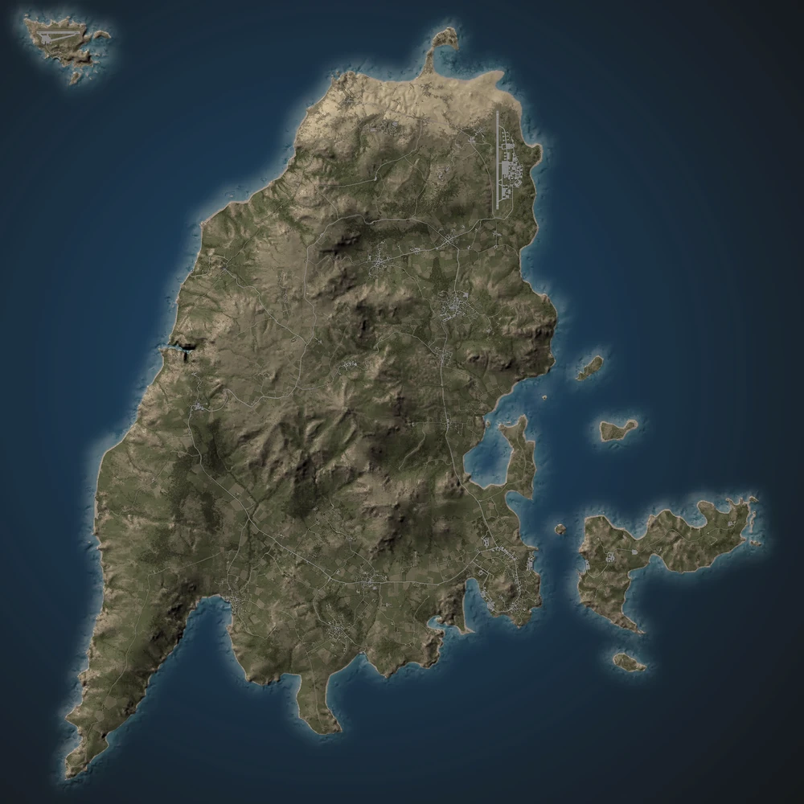

Inclusiv ambele insule mai mici izolate de continent, Malden acopera o suprafata de numai 62 de kilometri patrati. Conditiile de pe insula sunt un amestec de aflorinte muntoase semi-aride care definesc peisajul general. Frunzisul nefacut de om prezent pe insula consta in cea mai mare parte din copaci stuposi si arbusti, cu ocazional padure densa constand din chiparosi/pini. Cel mai inalt punct din Malden este situat in varful La Cime, care atinge o inaltime de aproximativ 523 de metri deasupra nivelului marii.